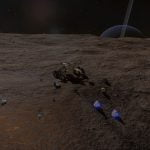
34 Virginis Abandoned SRV - An Abandoned SRV can be found in the 34 Virginis system on body 5 a.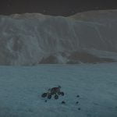
44 k Virginis Abandoned SRV - An Abandoned SRV can be found in the 44 k Virginis system on body B 7 e.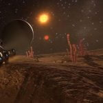
Alien Tubeworms Hunt - UPDATE! The hunt is over! With the advent of the galactic Codex CMDRs found tubeworms near the galactic core. These can be found in the in-game Codex classified as Sinuous Tubers in several areas around the Galactic Core sector. Commanders Syleo and Maligno often found wreckage and degraded emissions on their travels. Recently while sorting...
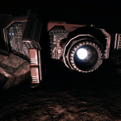
Ariane’s Pride Crash Site - Ariane's Pride is a crashed Type 9 found in the HIP 32001 system on body 3 a. Background Lore Index - In the galaxy of Elite Dangerous there are the Galnet News posts that give us insight into the world around us. In addition to the main story played out in front of us via those articles, Elite Dangerous has a rich background story that pilots can stumble across through various methods including trilateration through listening...
Background Lore Index - In the galaxy of Elite Dangerous there are the Galnet News posts that give us insight into the world around us. In addition to the main story played out in front of us via those articles, Elite Dangerous has a rich background story that pilots can stumble across through various methods including trilateration through listening...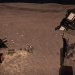
Belu Crashed Ship - This is a crashed Anaconda on Belu B 1 at 7.1537, -40.1309. The location of this crash site is provided by scanning the Settlement Comms Log Uplinks at the Unlisted Wreckage Site on Col 285 Sector EP-C b27-3 A 2. Note that the co-ordinates given in those logs are incorrectly inverted; also that the body on which the...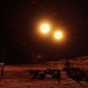
Botanical Research Station FNA-559 - Botanial Research Station FNA-559 is an abandoned settlement in the Col 285 Sector MZ-N c7-13 system on body AB 1. Carmichael Point - Carmichael Point is an abandoned settlement in the HIP 16824 system, on body A 2 f.
Carmichael Point - Carmichael Point is an abandoned settlement in the HIP 16824 system, on body A 2 f.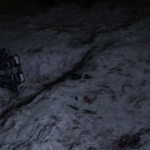
Charon Crashed Ship - This is a crashed Anaconda on Charon in Sol. This persistent crash is marked as “Human Signal (0)”. On the ground around the wreck are a number of cargo racks that can be shot or cut open with a Maverick Suit and a few manufactured materials for engineering. There is a Caine-Massey cargo pod alongside...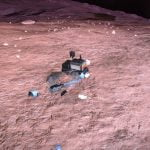
Clark’s Rest - Clark's Rest is a point of interest on in the Alshat system on body A 6 b.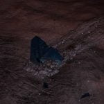
CMDR John Jameson Crashed Cobra MkIII - The crashed Cobra Mk III of ill-fated CMDR John Jameson can be found in the HIP 12099 system, on body 1 b.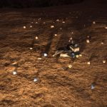
Col 285 Sector OP-L b9-0 Unnamed Crash Site - An Unnamed Crash Site can be found in the Col 285 Sector OP-L b9-0 system on body A 1.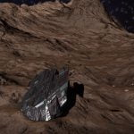
Colonia Crash Site - A wrecked Type 9 can be found in the Colonia system, on body 5 e a, at 29.2425, 39.1472 Some of its cargo of Brewer Corp boxes and Caine-Massey crates sprawled out behind it. Until August 3307 the area was considered a trespass zone, and was guarded by a Goliath; local System Defence Force ships also...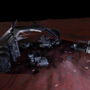
Colony Site BNI-87 - Colony Site BNI-87 is an abandoned settlement in the Wregoe TJ-Z d6 system on body B 1.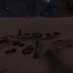
Colony SNB-86 - Colony SNB-86 is an abandoned settlement in the Wredguia JC-K c22-8 system on body 6 a.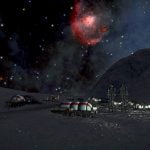
Columbus Expedition Camp 14 - Columbus Expedition Camp 14 is an abandoned settlement in the Wregoe VK-E c12-0 system on body B 1 a.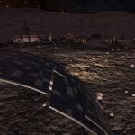
Communication Array Delta 69 - Communication Array Delta 69 is an abandoned settlement in the Col 285 Sector BG-O d6-93 system on body AB 1 d.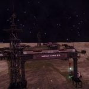
Conflux Alpha Site - An Unregistered Comms Beacon can be found in the Pru Aescs TY-J a64-1 system, orbiting body 1.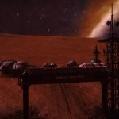
Conflux Beta Site - An Unregistered Comms Beacon can be found in the Pru Aescs HW-S b31-2 system, orbiting body A.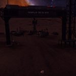
Conflux Delta Site - An Unregistered Comms Beacon can be found in the Pru Aescs NC-M d7-192 system, orbiting body A 2 a.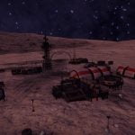
Conflux Gamma Site - An Unregistered Comms Beacon can be found in the Pru Aescs OI-K a64-0 system, orbiting body 1.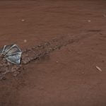
Crashed Thargoid Scout #1 - A crashed Thargoid Scout can be found on HIP 17125 body A 3 a, located at -65.1570, 47.4684 (in Live/4.0) or at -65.8248, 48.8649 (in Legacy/3.8). The crash site is surrounded by Thargoid Technology Samples, Thargoid Biological Matter, and Thargoid Resin. The buried nature of the ship makes it difficult to target with your SRV’s...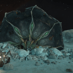
Crashed Thargoid Scout #2 - A crashed Thargoid Scout can be found on Pleiades Sector LN-T c3-4 body 2 a, located at -60.2105, 41.1846 (in Live/4.0) or at -60.8799, 42.5728 (in Legacy/3.8). The crash site is surrounded by Thargoid Technology Samples, Thargoid Biological Matter, and Thargoid Resin. There is a data point to target with your SRV’s data link scanner,...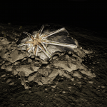
Crashed Thargoid Scout #3 - A crashed Thargoid Scout can be found on Arietis Sector ZE-A d75 body 10 a, located at 18.0215, 132.8716 (in Live/4.0) or at 18.0145, 131.9288 (in Legacy/3.8).The crash site is surrounded by Thargoid Technology Samples, Thargoid Biological Matter, and Thargoid Resin. There is a data point to target with your SRV’s data link scanner, and...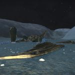
Crashed Thargoid Ship #1 - The first Crashed Thargoid Ship to be discovered can be found on Pleiades Sector AB-W b2-4 body 9 a, located at 43.9385, -143.8448 (in Live/4.0) or at -26.3429, 97.7139 (in Legacy/3.8).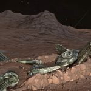
Crashed Thargoid Ship #2 - The second Crashed Thargoid Ship can be found on HIP 17862 body 6 c a, located at 30.3456, -98.5880 (in Live/4.0 and Legacy/3.8).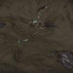
Crashed Thargoid Ship #3 - The third Crashed Thargoid Ship can be found on HIP 17403 body A 4 a, located at -7.3362, -6.2770 (in Live/4.0) or at -35.0120, -141.3890 (in Legacy/3.8).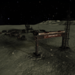
Crowther’s Rest - Crowther's Rest is an abandoned settlement in the Nervir system on body A 2 a.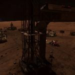
Dav’s Hope - Dav's Hope is an abandoned settlement in the Hyades Sector DR-V c2-23 system on body A 5.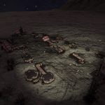
Exploration Camp C-NO4 - Exploration Camp C-NO4 is an abandoned settlement in the Synuefe JB-G b58-6 system on body 6 h.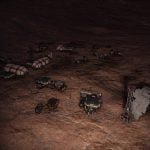
Exploration Camp JSPR-003 - Exploration Camp JSPR-003 is an abandoned settlement in the Col 285 Sector OZ-N c7-13 system on body BC 3 a.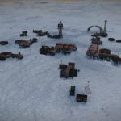
Exploration Camp JSPR-003 (#2) - Exploration Camp JSPR-003 is an abandoned settlement in the Col 359 Sector RY-H d10-58 system on body B 3 a.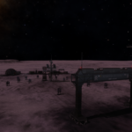
Extraction Site HS-98 - Extraction Site HS-98 is an abandoned settlement in the Col 285 Sector NP-W a31-3 system on body 6 a.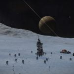
Extraction Site V-81 - Extraction Site V-81 is an abandoned mining site in the Synuefai FV-U b20-0 system on body 2 a.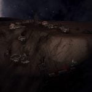
Formidine Rift Alpha Site - An Unregistered Comms Beacon can be found in the Eafots EU-R c4-1 system, orbiting body A.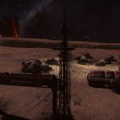
Formidine Rift Beta Site - An Unregistered Comms Beacon can be found in the Eafots LZ-H b10-0 system, orbiting body D.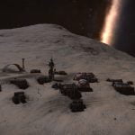
Formidine Rift Delta Site - An Unregistered Comms Beacon can be found in the Eafots GL-Y e2 system, orbiting body 1.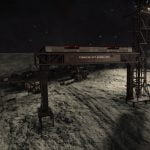
Formidine Rift Gamma Site - An Unregistered Comms Beacon can be found in the Eafots RA-G B11-0 system, orbiting body 3.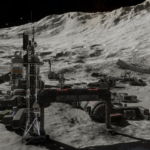
Fort Asch - Fort Asch is an abandoned settlement in the permit locked HIP 22460 system, on body 7 c, It was formerly run by Azimuth Biochemicals as part of Project Seraph – an attempt to make human controlled Thargoid ships. To get access to HIP 22460 you may need to get the system permit – available by...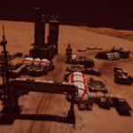
Geological Survey 23B - Geological Survey 23B is an abandoned settlement in the Musca Dark Region PJ-P b6-1 system, on body 3.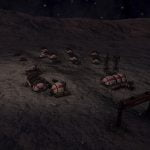
Gregorys Rest - Gregorys Rest is an abandoned settlement in the Koli Discii system on body C 6 a.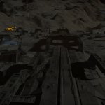
Guardian Structure - The Guardian Structure is a surface structure created by the Guardians. It was found after the less interactive Ancient Ruins (also created by The Guardians), and is often found in the same systems. While several Ancient Ruins are often found in the same system we have only found a maximum of one Guardian Structure per...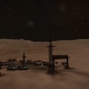
Hawkins Gap Alpha Site - An Unregistered Comms Beacon can be found in the Plaa Aec IZ-N c20-1 system, orbiting body A. Hawkins Gap Beta Site - An Unregistered Comms Beacon can be found in the Plaa Aec XZ-Z b41-0 system, orbiting body 1.
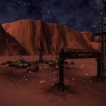
Hawkins Gap Delta Site - An Unregistered Comms Beacon can be found in the Plaa Aec RY-B B41-1 system, orbiting body A.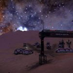
Hawkins Gap Gamma Site - An Unregistered Comms Beacon can be found in the Plaa Aec TT-B b41-3 system, orbiting body B 1.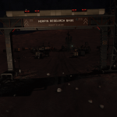
Herpin Research Base - Herpin Research Base is an abandoned settlement in the Wregoe HV-Z b15-0 system on body C 1.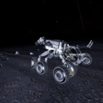
HIP 20556 Abandoned SRV - An Abandoned SRV can be found in the HIP 20556 system on body 6 a.

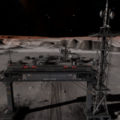
Holloway Bioscience Research Facility 15 - This abandoned base can be found in Snake Sector GW-W C1-1 on planet AB 5 b, located at -68.1465, 117.9519 (in Live/4.0) or at -68.1222, 118.0459 (in Legacy/3.8).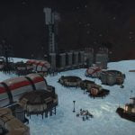
Jackson Enterprise - Jackson Enterprise is an abandoned settlement in the Col 285 Sector YF-M c8-8 system on body 10 b. Klatt Enterprises - Klatt Enterprises is an abandoned settlement in the Alnath system, on body A 2 a a.
Klatt Enterprises - Klatt Enterprises is an abandoned settlement in the Alnath system, on body A 2 a a.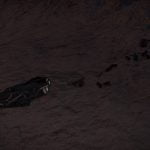
Koli Discii Crashed Ship - Koli Discii Crashed Ship is a wrecked Anaconda that has crashed in the Koli Discii system on body C 6 a. Lazarus Outpost - Lazarus Outpost is an abandoned settlement in the Wredguia RI-S d4-4 system on body A 1.
Leucos Crashed Ship - A wrecked Anaconda crashed nose-first into the moon Leucos A 5 a at -36.1280, -45.2436, scattering its cargo behind it. The wreckage, which includes Brewer Corp and Caine Massey crates as well as a number of Salvage cargo canisters from the following types: Prototype Tech Assault Plans Tactical Data Black Box Escape Pods Personal Effects Military...
LHS 2429 Crashed Ship - A crashed Type 9 on LHS 2429 1 at -14.17, 131.13 (use the Detailed Surface Scan to reveal it as CRASHED SHIP, though it doesn’t always appear straight after a scan). There is a cargo rack giving raw materials and most notably this crash is a source of legal Hafnium 178 (there are two tons...
Lookout Military Test Facility - Lookout Military Test Facility is an abandoned settlement in the Aldhibah system on body 1 a.
 Mayes Chemical Plant - Mayes Chemical Plant is an abandoned settlement in the HIP 59382 system, on body 1 b.
Mayes Chemical Plant - Mayes Chemical Plant is an abandoned settlement in the HIP 59382 system, on body 1 b. Medical Research Base BJI-86 - Medical Research Base BJI-86 is an abandoned settlement in the Col 359 Sector RN-S c4-12 system on body A 1.
Medical Research Base MIR-14 - Medical Research Base MIR-14 is an abandoned settlement in the Col 285 Sector FL-X b17-3 system on body A 2 a.
Mercury Crashed Ship #1 - This is a crashed Anaconda on Mercury in Sol. This persistent crash is marked as “Human Signal (0)”. Note that this ship resides in a Trespass Zone, remaining in them or attacking the skimmers will result in a bounty. On the ground around the wreck are a number of cargo racks that can be shot...
Mercury Crashed Ship #2 - This is a crashed Anaconda on Mercury in Sol. This persistent crash is marked as “Human Signal (0)”. Note that this ship resides in a Trespass Zone, remaining in them or attacking the skimmers will result in a bounty. On the ground around the wreck are a number of cargo racks that can be shot...
Orion’s Folly - Orion's Folly is an abandoned settlement in the Col 285 Sector UZ-O c6-9 system on body B 6.
Orrere Crashed Ship - A wrecked Anaconda crashed nose-first into the moon Orrere 2 b at 43.8214, -173.9800 , scattering its cargo behind it. From the contents of the wreckage, which includes Brewer Corp and Caine Massey crates as well as a number of cargo canisters: Bertrandite (14x), Beryllium (2x), Gold (3x), Palladium (2x). The wreckage includes three Cargo Racks that...
Planet Dave Outpost - Planet Dave Outpost is an abandoned settlement found in the Col 285 Sector ZT-I b25-0 system on body 2 a.
Proteus - The Proteus is an abandoned Anaconda which can be found in the Trapezium Sector YU-X c1-2 system, on body 1 a. It can be found at a Point of Interest labelled AZB2/H002255/SC-01.
Rawat Depot ++ - Rawat Depot is a Large Extraction (Medium Security) surface settlement on Coni A 2. This settlement would be otherwise unremarkable, except for a message hidden in its data banks: SCANNED MESSAGE Corporate Data Log: It’s proof; all the evidence we need that we’re not alone in the galaxy. The corporation has been hiding it all this...
Recon 6 Crash Site - Recon 6 Crash Site is a crashed Diamondback Explorer in the HIP 17746 system on body 3 c, at 28.7029, 16.5512 (in Live/4.0) or at 23.1706, 14.8575 (in Legacy/3.8). The existence of this crash site was hinted by the logs at Relay Station PSJ-17, and the location of this site can be found by following...
Renet Crashed Ship - A crashed Anaconda can be found in Renet system, on body B 1, at -34.7043 / 82.6290 (in Live/4.0) or at 13.9374 / 135.0855 (in Legacy/3.8). Claimed to have been found by CMDR NME Darkrevenge. A log can be found at the site by scanning the ship data core. Scanned Message Comms Record: No one...
Research Facility 5592 - Research Facility 5592 is an abandoned settlement in the HR 5991 system on body 1 b.
Serene Harbour - In the R CrA Sector AF-A d42 system on body 3 b, there is a POI marked UNKNOWN which is believed to be Serene Harbour - an Imperial Penal Colony.
Site 426 - Site 426 is an abandoned settlement in the Wregoe JI-B d13-130 system on body 1, at 65.8377, 176.9457 (in Live/4.0 and Legacy/3.8).
SRV-Odysseus - SRV-Odysseus is an abandoned SRV that can be found in the Alshat system on body A 6 b.


Survey Vessel Stargazer - Survey Vessel Stargazer is a crashed Diamondback Explorer in the HIP 16378 system on 3 b, at 37.1042, -148.0340 (in Live/4.0) or at 37.0649, -147.8056 (in Legacy/3.8). The location of this site can be found by reading the Station Herald at Maia, or by following the two listening posts located in:Bhadaba / HIP 16378 Herald...

Thargoid Site Survey - This study produces a photographic record of all Thargoid surface structures and an analysis of the structures above the surface. The analysis is used to form the basis of a new way of classifying the sites to facilitate further study of the surface sites.
The Bifrost - The Bifrost is a crashed Anaconda in Col 173 Sector LJ-F c12-0 on body A 4 c, at -68.0162, 49.9007 (in Live/4.0) or at 23.5061, 154.8769 (in Legacy/3.8). Around the crash site there are a variety of engineering materials, an access point to give data, and three logs. The Bifrost was part of a Canonn...
The Church Of The Path - The Church Of The Path is an abandoned settlement in the Shibboleth system on body 2 e.
 The Sanctum / The Prophet - The Sanctum and The Prophet are a pair of planetary settlements can be found in the Etain system, on body 4 a and body 4 c. They have permanent navigation markers (earlier settlements needed to be scanned before you could see them in the Navigation panel of your ship). The settlements appear to have been...
The Sanctum / The Prophet - The Sanctum and The Prophet are a pair of planetary settlements can be found in the Etain system, on body 4 a and body 4 c. They have permanent navigation markers (earlier settlements needed to be scanned before you could see them in the Navigation panel of your ship). The settlements appear to have been... Trading Vessel MD-001 - Trading Vessel MD-001 is a crashed Anaconda and temporary outpost found in the HIP 62233 system on body 1.
Trading Vessel MD-002 - Trading Vessel MD-002 is an abandoned Anaconda which can be found in the HR 6051 system on body 2 f.
Trading Vessel MD-003 - Trading Vessel MD-003 is an abandoned Anaconda which can be found in the HR 5625 system on body A 1.
Trading Vessel MD-004 - Trading Vessel MD-004 is an abandoned Anaconda which can be found in the HIP 83003 system on body 6 a.
Transport Lakon Baker Gamma Sierra Heavy - This is an Easter Egg placed in the game, a clue to the distress beacon above the planet was given during a livestream on the Background Simulation (aka BGS) with CMDR Dav. -[--->+<]>-.[---- >+++++<]>-.+++++++.+++++.- -----------.--[--->+<]>-- .[-->+++<]>+.[->++<]>-. This appeared to be in an ancient computer programming language called “Brainfuck,” when the program was executed, it returned...
Traveller Expedition - Traveller Expedition is an abandoned settlement that can be found in the Wredguia ZR-E b53-4 system, on body 1 f a.
Unlisted Wreckage Site - An Unlisted Wreckage Site can be found in the Col 285 Sector EP-C b27-3 system on body A 2.
Unregistered Derelict - Unregistered Derelict is an abandoned Anaconda which can be found in the HR 5906 system on body AB 2 a.
Unregistered Sensor Array - Unregistered Sensor Array is a small surface base in the Synuefe KN-J a77-3 system on body 1.
 Velasquez Medical Research Centre - Velasquez Medical Research Centre is an abandoned settlement in the LP 389-95 system, on body 7.
Velasquez Medical Research Centre - Velasquez Medical Research Centre is an abandoned settlement in the LP 389-95 system, on body 7. Winking Cat Caches 1-3 - The Galnet article released on the 16th of December 3307 contained a message from the Winking Cat, stamped upon the back of the playing card stolen from Joker’s Deck: Since the Galnet also mentioned a break-in at WorldCraft, a corporation based in Epsilon Eridani, Discord member Disgo then set out to search that system and...